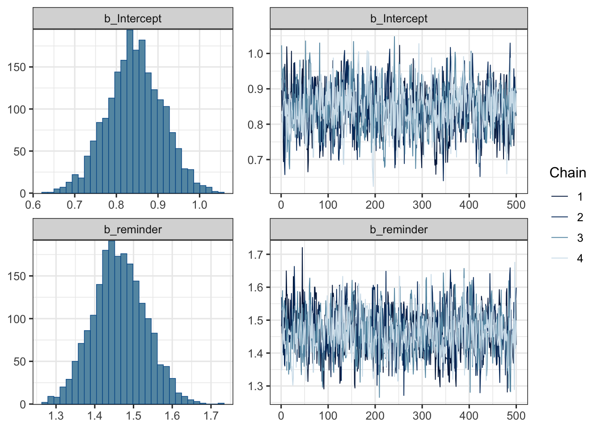
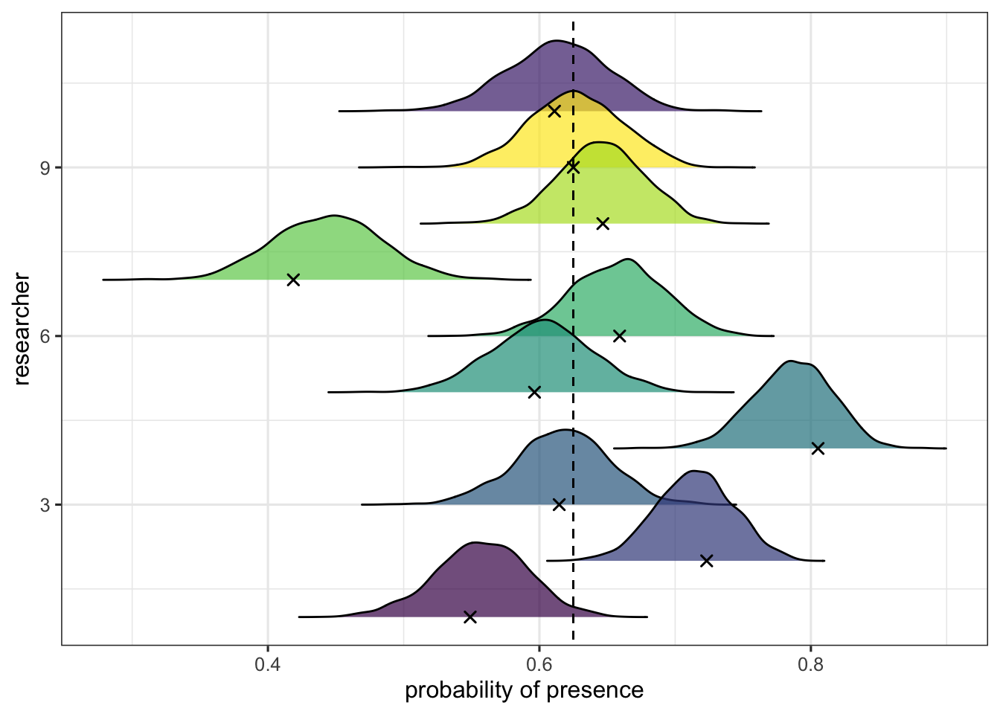
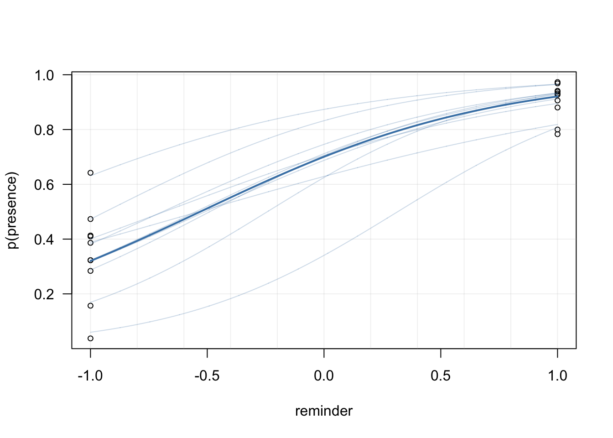
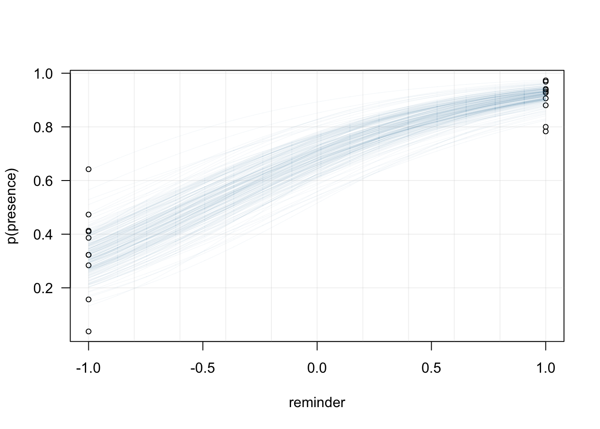

library(tidyverse)
(data <-
read.csv(
"http://raw.githubusercontent.com/lnalborczyk/old_blog/master/_posts/absenteeism/absence2.csv",
stringsAsFactors = FALSE) )In a previous post, we tried to determine whether we could predict the presence of students that registered for psychological experiments, based on their mode of enrolment and the sending of a reminder by e-mail. As these two factors were confounded, we will focus in the current post on evaluating the effect of the reminder only, based on a bigger dataset gathered by several researchers.
Let’s say that I have convinced ten of my colleagues to systematically send a reminder to one half of the participants of their next study, and no reminder to the other half.1 As my colleagues love high-powered studies, each of them aimed at recruiting approximately 200 participants per experiment, while this sample size could vary a little bit from one researcher to another (+/- 20%).
Step 1: Getting the data
reminder researcher presence absence total
1 -1 1 16 86 102
2 -1 2 53 59 112
3 -1 3 31 65 96
4 -1 4 61 34 95
5 -1 5 34 49 83
6 -1 6 34 54 88
7 -1 7 3 77 80
8 -1 8 38 54 92
9 -1 9 31 65 96
10 -1 10 23 58 81
11 1 1 96 6 102
12 1 2 109 3 112
13 1 3 87 9 96
14 1 4 92 3 95
15 1 5 65 18 83
16 1 6 82 6 88
17 1 7 64 16 80
18 1 8 81 11 92
19 1 9 89 7 96
20 1 10 76 5 81The reminder column indicates whether a reminder e-mail was sent to the participant prior to the experiment (coded as 1), while the researcher column indicates which researcher ran the study, from 1 to 10. The last three columns represent the counts of present, absent, and total number of participants, for a grand total of 1850 participants.
Step 2: Introducing brms
In this first section, we will introduce the brms package (Bürkner, 2017), and fit a first simple model to try to predict the mean log-odds of a participant being present, through a linear combination of an intercept \(\alpha\) and a slope \(\beta\), the latter allowing to quantify the effect of the reminder.
\[ \begin{aligned} y_{i} &\sim \mathrm{Binomial}(n_{i}, p_{i}) \\ logit(p_{i}) &= \alpha + \beta \times \text{reminder} \\ \alpha &\sim \mathrm{Normal}(0, 10) \\ \beta &\sim \mathrm{Normal}(0, 10) \\ \end{aligned} \]
One great advantage of brms is that it allows to specify models using an lme4-like syntax, where the left side of the formula describes the outcome to be predicted and the right side describes the predictors (both constant and varying effects). When trying to predict aggregated binomial data, the outcome that is modeled is the number of successes (in our case, presence) out of the total number of trials, which is expressed in brms as sucesses|trials(total)2.
As previously, we can retrieve the grand mean probability of presence by transforming back the intercept, as we know that \(p = \exp(\alpha) / (1 + \exp(\alpha) )\).
a <- fixef(mod1)[1] # extracting the intercept
exp(a) / (1 + exp(a) ) # equivalent to plogis(a)[1] 0.6993127A summary of this model can be obtained using the posterior_summary() function, which provides the mean of the posterior distribution along with its standard error and credible intervals.
posterior_summary(x = mod1, pars = "^b_") Estimate Est.Error Q2.5 Q97.5
b_Intercept 0.8440272 0.06655923 0.7098812 0.9750707
b_reminder 1.4633627 0.06782405 1.3320154 1.6002322Alternatively, brms (in combination with bayesplot) offers a nice method to plot brmsfit objects. Below, we plot an histogram of samples from the posterior distribution for both the intercept \(\alpha\) and the slope \(\beta\), along with traceplots.
mod1 %>%
plot(
combo = c("hist", "trace"), widths = c(1, 1.5),
theme = theme_bw(base_size = 12) )
From this first model we can also compute (as previously) the odds ratio (OR), between the no-reminder and the reminder conditions, by simply exponentiating the slope. In our case, the OR is approximately equal to 4.32 (95% HDI [3.79, 4.94]), meaning that it is 4.32 times more likely that participants will be present if a reminder is sent prior to the experiment.
There is one major issue though with this analysis, related to the nested structure of the data. Each researcher evaluated the effects of the reminder in his study, and we could expect each study to have its own baseline level of presence probability, perhaps related to the specificities of the study, or to the field of research, the university, etc. In other words, we could expect participants of the same cluster (i.e., the same study, ran by the same researcher) to be more similar to each others, than participants of different clusters. In other words, observations are interdependant. In this situation, we can not run a standard logistic regression analysis because this violates one of the most important assumptions in the linear model, namely the assumption of independence of the residuals (Sommet & Morselli, 2017). Multilevel models (MLMs) allow to disentangle the effects intrinsic to a specific cluster and the between-clusters effects, by allowing parameters to vary by cluster.
Step 3: Varying the intercept
With the following model, we will estimate the mean probability of presence, only specifying an intercept (this model is sometimes called the unconditionnal mean model), that we will allow to vary by researcher.
\[ \begin{aligned} y_{i} &\sim \mathrm{Binomial}(n_{i}, p_{i}) \\ logit(p_{i}) &= \alpha_{researcher_{[i]}} \\ \alpha_{researcher} &\sim \mathrm{Normal}(\alpha, \sigma) \\ \alpha &\sim \mathrm{Normal}(0, 10) \\ \sigma &\sim \mathrm{HalfCauchy}(0, 10) \\ \end{aligned} \]
From this formulation we can see that the log-odds are now allowed to vary by cluster (i.e., by researcher), and that we are also estimating the parameters of the distribution from which these intercepts are issued (i.e., the population of intercepts, described in the third line of the model). This way, the model can learn information both at the level of the researcher, and at the level of the population of researchers, thus fighting the anterograde amnesia of the constant-effects models (see McElreath, 2016, page 355).
posterior_summary(x = mod2, pars = c("^b_", "^sd_") ) Estimate Est.Error Q2.5 Q97.5
b_Intercept 0.5178029 0.1551947 0.2085607 0.8357788
sd_researcher__Intercept 0.4908564 0.1453872 0.2746701 0.8567788We can interpret the variation of the intercept \(\alpha\) between researchers by considering the intra-class correlation (ICC)3, which goes from 0 if the grouping conveys no information to 1 if all levels of a cluster are identical (Gelman, 2006, p. 258). In other words, ICC = 0 indicates perfect independence of residuals: the observations do not depend on cluster membership. When the ICC is not different from zero or negligible, one could consider running traditional one-level regression analysis. However, ICC = 1 indicates perfect interdependence of residuals: the observations only vary between clusters (Sommet & Morselli, 2017).
The ICC is usually expressed as \(\frac{\tau^{2}}{\tau^{2} + \sigma^{2}}\), where \(\tau^{2}\) denotes the variance of the distribution of the varying effects. However, in the context of logistic regression, we do not have residuals (i.e., the \(\sigma^{2}\)) on the first level… A first approach to compute the ICC in multilevel logistic regression is known as the latent variable approach, as we assume that the true underlying variable is continuous but that we can only observe a binary response that indicates whether the underlying variable is greater or less than a given threshold. In the logistic regression model, the underlying continuous variable will come from a logistic distribution, with a variance of \(\frac{\pi^2}{3}\), and hence we substitute this for the level 1 variance, resulting in the formula: \(\frac{\tau^{2}}{\tau^{2} + \frac{\pi^2}{3}}\) when using a logit link (Austin & Merlo, 2017; Browne, Subramanian, Jones, & Goldstein, 2005; Sommet & Morselli, 2017).
Note though that this method of estimating the ICC can differ considerably from other methods (e.g., the simulation method, wait for the next post…) as we assume that the level 1 variance is fixed and independent of the predictor variables.
# extracting tau^2
tau2 <- posterior_summary(x = mod2, pars = "^sd_")
tau2 <- tau2[1]^2
# computing the ICC
(ICC <- tau2 / (tau2 + (pi^2 / 3) ) )[1] 0.06823933In our case, the ICC is equal to 0.0682, indicating that 6.82% of the chances of being present is explained by between-study differences, and conversely, that 6.82% is explained by within-study differences.
Another way to visualise the variability of the varying intercepts is to plot them. In the following plot, we use the ggjoy package (Wilke, 2017) to represent the posterior distribution of the estimated mean probability of presence for each researcher along with raw data estimation (the black crosses), while the vertical dotted line represents the grand mean probability of presence.

This plot reveals the phenomenon of shrinkage, that is the phenomenon through which the model expresses its skepticism toward extreme values. The mean predicted probability of presence for each researcher (the varying intercept) will differ from the raw estimation in an amount that is dependant to the distance between this raw proportion and the grand mean probability (and the precision of the estimation for this particular cluster). The more the data seem weird, the more the model’s estimation will be shrunk to the grand mean.
Step 4: Varying the slope
In the same manner that the mean probability of presence might be different from researcher to researcher, one might ask whether the effects of the reminder are identical between researchers. In the next model, we will then allow the slope to vary by researcher too.
\[ \begin{aligned} y_{i} &\sim \mathrm{Binomial}(n_{i}, p_{i}) \\ logit(p_{i}) &= \alpha_{researcher_{[i]}} + \beta_{researcher_{[i]}} \times \text{reminder}_{i} \\ \begin{bmatrix} \alpha_{\text{researcher}} \\ \beta_{\text{researcher}} \\ \end{bmatrix} &\sim \mathrm{MVNormal}\bigg(\begin{bmatrix} \alpha \\ \beta \end{bmatrix}, \textbf{S}\bigg) \\ \textbf{S} &= \begin{pmatrix} \sigma_{\alpha} & 0 \\ 0 & \sigma_{\beta} \\ \end{pmatrix} \textbf{R} \begin{pmatrix} \sigma_{\alpha} & 0 \\ 0 & \sigma_{\beta} \\ \end{pmatrix} \\ \alpha &\sim \mathrm{Normal}(0, 10) \\ \beta &\sim \mathrm{Normal}(0, 10) \\ (\sigma_{\alpha}, \sigma_{\beta}) &\sim \mathrm{HalfCauchy}(0, 10) \\ \textbf{R} &\sim \mathrm{LKJcorr}(2) \\ \end{aligned} \]
We chose to model the varying intercept and the varying slope as issued from the same multivariate normal distribution (on the third line), allowing to estimate the correlation between them (for more details see McElreath, 2016). One reason to do this might be that a low mean probability of presence for a particular study, could be associated with a stronger / weaker effect of the reminder for this particular study. For instance, we could imagine that some researchers paid their participants, and some others did not, and that the latter kind of study would have a lower mean probability of presence, but would exhibit a stronger effect of the reminder (i.e., we would expect a negative correlation between the intercept and the slope).
Note that one way to model both varying intercept and varying slope without modelling the correlation between these two terms is to specify a double pipe in the formula like (1+reminder||researcher).
posterior_summary(x = mod3, pars = c("^b_", "cor", "^sd_") ) Estimate Est.Error Q2.5 Q97.5
b_Intercept 0.8569549 0.3019812 0.2432108 1.4436185
b_reminder 1.6121606 0.1900630 1.2778515 2.0288942
cor_researcher__Intercept__reminder -0.1924653 0.3379014 -0.7640478 0.5151465
sd_researcher__Intercept 0.8689819 0.2749611 0.4772631 1.5331141
sd_researcher__reminder 0.4867195 0.2062993 0.2362761 0.9728044This output indeed indicates a negative correlation between the varying intercept and the varying slope but relatively weak and associated with a lot of uncertainty (\(\rho=-0.19\), 95% HDI [-0.75, 0.47]).
One way to compare the models we fitted would be to compare their predictive abilities. It can be done with the LOO function, which uses leave-one-out cross-validation (Gelfand, Dey, & Chang 1992; Vehtari, Gelman, & Gabry, 2015).
brms::LOO(mod1, mod2, mod3, compare = FALSE)Output of model 'mod1':
Computed from 2000 by 20 log-likelihood matrix.
Estimate SE
elpd_loo -125.8 30.1
p_loo 14.2 4.8
looic 251.5 60.1
------
MCSE of elpd_loo is NA.
MCSE and ESS estimates assume MCMC draws (r_eff in [0.4, 1.1]).
Pareto k diagnostic values:
Count Pct. Min. ESS
(-Inf, 0.7] (good) 19 95.0% 85
(0.7, 1] (bad) 1 5.0% <NA>
(1, Inf) (very bad) 0 0.0% <NA>
See help('pareto-k-diagnostic') for details.
Output of model 'mod2':
Computed from 2000 by 20 log-likelihood matrix.
Estimate SE
elpd_loo -599.4 53.3
p_loo 282.4 22.9
looic 1198.8 106.5
------
MCSE of elpd_loo is NA.
MCSE and ESS estimates assume MCMC draws (r_eff in [0.8, 1.0]).
Pareto k diagnostic values:
Count Pct. Min. ESS
(-Inf, 0.7] (good) 0 0.0% <NA>
(0.7, 1] (bad) 0 0.0% <NA>
(1, Inf) (very bad) 20 100.0% <NA>
See help('pareto-k-diagnostic') for details.
Output of model 'mod3':
Computed from 2000 by 20 log-likelihood matrix.
Estimate SE
elpd_loo -65.0 3.1
p_loo 16.0 2.3
looic 129.9 6.2
------
MCSE of elpd_loo is NA.
MCSE and ESS estimates assume MCMC draws (r_eff in [0.4, 0.9]).
Pareto k diagnostic values:
Count Pct. Min. ESS
(-Inf, 0.7] (good) 3 15.0% 179
(0.7, 1] (bad) 13 65.0% <NA>
(1, Inf) (very bad) 4 20.0% <NA>
See help('pareto-k-diagnostic') for details.This comparison reveals that the third model has the best predictive abilities, indicating that it was savvy to include a varying slope. Below we plot the posterior predictions of this last model, at the group-level as well at the population-level (in base plot, because we love base plot).
# extracting posterior samples from the last model
post <- posterior_samples(mod3, "b")
# plotting the raw data
plot(data$prob ~ data$reminder, las = 1,
pch = 1, cex = 0.75,
xlab = "reminder", ylab = "p(presence)")
# adding a grid
abline(h = seq(0, 1, 0.2), v = seq(-1, 1, 0.2),
col = adjustcolor("gray", alpha.f = 0.2), lty = 1)
# extracting coefficients
coefs <- rbind(
data.frame(t(matrix(fixef(mod3)[, 1]) ) ) %>%
rename(intercept = X1, slope = X2),
data.frame(coef(mod3) %>% data.frame %>% select(contains("Estimate") ) ) %>%
rename(intercept = 1, slope = 2)
)
# plotting population-level predictions
x_plot <- seq(-1, 1, length.out = 2000)
y_plot <- plogis(coefs[1, 1] + coefs[1, 2] * x_plot)
lines(x_plot, y_plot, lwd = 2, col = "steelblue")
# plotting group-level predictions
for(i in 2:nrow(coefs) ){
x_plot <- seq(-1, 1, length.out = 2000)
y_plot <- plogis(coefs[i, 1] + coefs[i, 2] * x_plot)
lines(x_plot, y_plot, lwd = 1,
col = adjustcolor("steelblue", alpha.f = 0.25) )
}
The uncertainty associated with the estimation of the intercept and the slope at the population-level can be appreciated by superimposing many samples from the posterior (see also this blogpost from Matti Vuorre for much nicer plots and how to plot credible intervals at the individual-level).
# plotting the raw data
plot(data$prob ~ data$reminder, las = 1,
pch = 1, cex = 0.75,
xlab = "reminder", ylab = "p(presence)")
# adding a grid
abline(h = seq(0, 1, 0.2), v = seq(-1, 1, 0.2),
col = adjustcolor("gray", alpha.f = 0.2), lty = 1)
# plotting group-level predictions (surimposing 1 out of 10 posterior samples)
for(i in seq(1, nrow(post), 10) ){
x_plot <- seq(-1, 1, length.out = 2000)
y_plot <- plogis(post[i,1] + post[i,2] * x_plot)
lines(x_plot, y_plot, lwd = 0.75,
col = adjustcolor("steelblue", alpha.f = 0.05) )
}
Conclusions
To sum up, the effect of the reminder, while non negligeable, appears as quite variable accross different studies ran by different researchers. The baseline probability of presence by researcher appears as even more variable. Thus, predictions of our models could be improved by incorporating more information in the model, for instance by taking into account the similarity between different teams (e.g., teams of the same lab, or studies realised in the same field of research), by refining the structure of the model and adding additionnal levels.
References
Click to expand
Browne, W. J., Subramanian, S. V., Jones, K., Goldstein, H. (2005). Variance partitioning in multilevel logistic models that exhibit overdispersion. Journal of the Royal Statistical Society—Series A, 168(3):599–613.
Bürkner, P.-C. (2017). brms: An R Package for Bayesian Multilevel Models Using Stan. Journal of Statistical Software, 80(1), 1-28. doi:10.18637/jss.v080.i01
Claus O. Wilke (2017). ggjoy: Joyplots in ‘ggplot2’. R package version 0.2.0. https://CRAN.R-project.org/package=ggjoy
Evans, M., Hastings, N., Peacock, B. (1993). Statistical Distributions. John Wiley and Sons: New York, NY.
Gelfand, A.E., Dey, D.K., Chang, H. (1992). Model Determination Using Predictive Distributions with Implementation via Sampling-Based Methods. Technical report, DTIC Document.
McElreath, R. (2016). Statistical Rethinking. Chapman; Hall/CRC.
Robinson, D. (2017). broom: Convert Statistical Analysis Objects into Tidy Data Frames. R package version 0.4.2. https://CRAN.R-project.org/package=broom
Sommet, N., & Morselli, D. (2017). Keep Calm and Learn Multilevel Logistic Modeling: A Simplified Three-Step Procedure Using Stata, R, Mplus, and SPSS. International Review of Social Psychology, 30(1), 203–218, DOI: https://doi.org/10.5334/irsp.90
Vehtari, A., Gelman, A., Gabry, J. (2015). Efficient Implementation of Leave-One-Out Cross- Validation and WAIC for Evaluating Fitted Bayesian Models. Unpublished manuscript, pp. 1–22. URL http://www.stat.columbia.edu/~gelman/research/unpublished/loo_ stan.pdf.
Footnotes
Citation
BibTeX citation:
@online{nalborczyk2017,
author = {Nalborczyk, Ladislas},
title = {Experimental Absenteeism and Logistic Regression - {Part}
{II}},
date = {2017-09-22},
url = {https://lnalborczyk.github.io/blog/2017-09-22-absenteeism2/},
langid = {en}
}
For attribution, please cite this work as:
Nalborczyk, L. (2017, September 22). Experimental absenteeism and
logistic regression - Part II. https://lnalborczyk.github.io/blog/2017-09-22-absenteeism2/